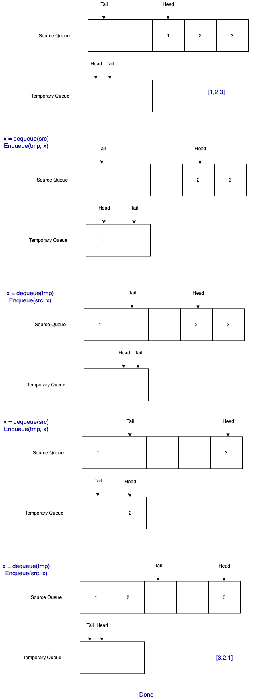

loop 執行次數大約為 n n n O ( n ) O(n) O ( n )
執行次數大約為 l o g 2 ( n ) − 1 log_{2}(n) - 1 l o g 2 ( n ) − 1 8 = 2 3 = 2 × 2 × 2 undefined 2 次 8=2^3=2\times \underbrace{2\times 2}_{2次} 8 = 2 3 = 2 × 2 次 2 × 2 O ( l o g ( n ) ) O(log(n)) O ( l o g ( n ))
Time complexity of recurive functions
T ( n ) = 4 T ( n − 1 ) T ( n ) = 4 ( 4 T ( n − 2 ) ) T ( n ) = 4 n − c 3 T ( c − 1 ) T ( n ) = 4 n − c 3 c T ( n ) = O ( 4 n ) # \begin{align}
T(n) &= 4T(n-1) \\
T(n) &= 4 (4 T(n-2)) \\
T(n) &= 4^{n-c} 3T(c-1) \\
T(n) &= 4^{n-c} 3^c \\
T(n) &= O(4^n)_{\#}
\end{align} T ( n ) T ( n ) T ( n ) T ( n ) T ( n ) = 4 T ( n − 1 ) = 4 ( 4 T ( n − 2 )) = 4 n − c 3 T ( c − 1 ) = 4 n − c 3 c = O ( 4 n ) #
Becsue f ( n ) f(n) f ( n ) g ( n ) g(n) g ( n ) n n n
0 ≤ m a x ( f ( n ) + g ( n ) ) ≤ f ( n ) + g ( n ) ≤ 2 ⋅ m a x ( f ( n ) + g ( n ) ) 0 \leq max(f(n) + g(n)) \leq f(n) + g(n) \leq 2\cdot max(f(n) + g(n)) 0 ≤ ma x ( f ( n ) + g ( n )) ≤ f ( n ) + g ( n ) ≤ 2 ⋅ ma x ( f ( n ) + g ( n ))
for any n ≥ 1 n\geq 1 n ≥ 1
We can find a c 1 ≥ 2 c_1\geq2 c 1 ≥ 2
f ( n ) + g ( n ) ≤ c 1 m a x ( f ( n ) + g ( n ) ) f(n) + g(n) \leq c_1 max(f(n)+g(n)) f ( n ) + g ( n ) ≤ c 1 ma x ( f ( n ) + g ( n ))
And also a c 2 ≤ 1 c_2 \leq 1 c 2 ≤ 1
c 2 m a x ( f ( n ) + g ( n ) ) ≤ f ( n ) + g ( n ) c_2 max(f(n)+ g(n)) \leq f(n) + g(n) c 2 ma x ( f ( n ) + g ( n )) ≤ f ( n ) + g ( n )
for all n ≥ 1 n\geq 1 n ≥ 1 Θ ( n ) \Theta(n) Θ ( n )
Because f ( n ) = O ( i ( n ) ) f(n) = O(i(n)) f ( n ) = O ( i ( n )) g ( n ) = O ( j ( n ) ) g(n) = O(j(n)) g ( n ) = O ( j ( n )) n 1 n_1 n 1 n 2 n_2 n 2 c 1 c_1 c 1 c 2 c_2 c 2
f ( n ) ≤ c 1 i ( n 1 ) f(n) \leq c_1 i(n_1) f ( n ) ≤ c 1 i ( n 1 ) g ( n ) ≤ c 2 j ( n 2 ) g(n) \leq c_2 j(n_2) g ( n ) ≤ c 2 j ( n 2 )
Let n 0 = m a x ( n 1 , n 2 ) n_0 = max(n_1, n_2) n 0 = ma x ( n 1 , n 2 ) c 0 = c 1 c 2 c_0 = c_1c_2 c 0 = c 1 c 2 f ( n ) ⋅ g ( n ) f(n)\cdot g(n) f ( n ) ⋅ g ( n )
f ( n ) ⋅ g ( n ) ≤ c 1 i ( n ) ⋅ c 2 j ( n ) ≤ c 0 i ( n ) j ( n ) f(n) \cdot g(n) \leq c_1 i(n) \cdot c_2 j(n) \leq c_0 i(n)j(n) f ( n ) ⋅ g ( n ) ≤ c 1 i ( n ) ⋅ c 2 j ( n ) ≤ c 0 i ( n ) j ( n )
for all n ≥ n 0 n\geq n_0 n ≥ n 0 f ( n ) ⋅ g ( n ) ≤ O ( i ( n ) ⋅ j ( n ) ) # f(n)\cdot g(n) \leq O(i(n)\cdot j(n))_{\#} f ( n ) ⋅ g ( n ) ≤ O ( i ( n ) ⋅ j ( n ) ) #
The statement is false . Here is a contradictory example:
Let f ( n ) = 2 log 2 n f(n) = 2 \log_{2} n f ( n ) = 2 log 2 n g ( n ) = log 2 n g(n) = \log_{2} n g ( n ) = log 2 n f ( n ) = O ( g ( n ) ) f(n) = O(g(n)) f ( n ) = O ( g ( n )) 2 f ( n ) = 2 2 log 2 n = n 2 2^{f(n)} = 2^{ 2 \log_{2} n} = n^2 2 f ( n ) = 2 2 l o g 2 n = n 2 2 g ( n ) = n 2^{g(n)} = n 2 g ( n ) = n 2 f ( n ) ∉ O ( 2 g ( n ) ) # 2^{f(n)} \notin O(2^{g(n)})_{\#} 2 f ( n ) ∈ / O ( 2 g ( n ) ) #
Strategy: Approximation by Integrals
Let f ( k ) = 1 k f(k) = \frac{1}{k} f ( k ) = k 1 monotonically decreasing function . We can find the bounds
∫ m n + 1 f ( x ) d x ≤ ∑ k = m n 1 k ≤ ∫ m − 1 n f ( x ) d x \int_{m}^{n+1} f(x)dx \leq \sum_{k=m}^{n} \frac{1}{k} \leq \int_{m-1}^{n} f(x) dx ∫ m n + 1 f ( x ) d x ≤ k = m ∑ n k 1 ≤ ∫ m − 1 n f ( x ) d x
For a lower bound ,
∑ k = 1 n 1 k ≥ ∑ 1 n + 1 1 x d x = ln ( n + 1 ) \sum_{k=1}^{n} \frac{1}{k} \geq \sum^{n+1}_{1} \frac{1}{x} dx = \ln(n+1) k = 1 ∑ n k 1 ≥ 1 ∑ n + 1 x 1 d x = ln ( n + 1 )
For an upper bound ,
∑ k = 2 n 1 k + 1 ≤ ∫ 1 n 1 x d x + 1 = ln ( n ) + 1 \begin{align*}
\sum_{k=2}^{n} \frac{1}{k} + 1 & \leq \int_{1}^{n} \frac{1}{x} dx + 1\\
& = \ln(n) + 1
\end{align*} k = 2 ∑ n k 1 + 1 ≤ ∫ 1 n x 1 d x + 1 = ln ( n ) + 1
In summary,
ln ( n + 1 ) ≤ ∑ k = 1 n 1 k ≤ ln ( n ) + 1 \ln(n+1) \leq \sum_{k=1}^{n} \frac{1}{k} \leq \ln(n)+1 ln ( n + 1 ) ≤ k = 1 ∑ n k 1 ≤ ln ( n ) + 1
We need to find constants c 1 c_1 c 1 c 2 c_2 c 2 ln ( n ) \ln(n) ln ( n )
Lower bound: ln ( n + 1 ) > 1 ⋅ l n ( n ) \ln(n+1) > 1 \cdot ln(n) ln ( n + 1 ) > 1 ⋅ l n ( n )
where c 1 = 1 c_1 = 1 c 1 = 1 n ≥ 1 n \geq 1 n ≥ 1
Upper bound: ln ( n ) + 1 = ln ( e ⋅ n ) < 2 ⋅ ln ( n ) \ln(n) + 1 = \ln(e\cdot n) < 2\cdot \ln(n) ln ( n ) + 1 = ln ( e ⋅ n ) < 2 ⋅ ln ( n )
where c 2 = 2 c_2 = 2 c 2 = 2 n > e n > e n > e
Therefore,
0 ≤ ln ( n ) ≤ ∑ k = 1 n 1 k ≤ 2 ln ( n ) 0\leq \ln(n) \leq \sum_{k=1}^{n} \frac{1}{k} \leq 2\ln(n) 0 ≤ ln ( n ) ≤ k = 1 ∑ n k 1 ≤ 2 ln ( n )
for all n > e n>e n > e Θ \Theta Θ ∑ k = 1 n 1 k = Θ ( ln n ) = Θ ( log n log e ) = Θ ( log n ) # \sum^{n}_{k=1} \frac{1}{k} = \Theta(\ln n) = \Theta(\frac{\log n}{\log e}) = \Theta(\log n)_{\#} ∑ k = 1 n k 1 = Θ ( ln n ) = Θ ( l o g e l o g n ) = Θ ( log n ) #
The equation can be expanded
log ( n ! ) = log ( n ) + log ( n − 1 ) + ⋯ + log ( 1 ) \log(n!) = \log(n) + \log(n-1) + \cdots + \log(1) log ( n !) = log ( n ) + log ( n − 1 ) + ⋯ + log ( 1 )
We can find the upper bound by setting all the terms as log ( n ) \log(n) log ( n )
log ( n ! ) ≤ n log ( n ) \log(n!) \leq n\log(n) log ( n !) ≤ n log ( n )
On the other hand, log ( n ! ) \log(n!) log ( n !)
log ( n ! ) = log ( n ∗ ( n − 1 ) ∗ ( n − 1 ) ∗ ⋯ ∗ 1 ) \log(n!) = \log(n * (n-1) * (n-1) * \cdots * 1) log ( n !) = log ( n ∗ ( n − 1 ) ∗ ( n − 1 ) ∗ ⋯ ∗ 1 )
By removing half of elements,
log ( n ! ) ≥ log ( n ∗ ( n − 1 ) ∗ ⋯ ∗ ( n 2 ) ) ≥ log ( ( n 2 ) n 2 ) = n 2 log ( n 2 ) \begin{align*}
\log(n!) &\geq \log(n*(n-1)*\cdots*(\frac{n}{2})) \\
&\geq \log((\frac{n}{2})^{\frac{n}{2}}) = \frac{n}{2} \log(\frac{n}{2})
\end{align*} log ( n !) ≥ log ( n ∗ ( n − 1 ) ∗ ⋯ ∗ ( 2 n )) ≥ log (( 2 n ) 2 n ) = 2 n log ( 2 n )
The relation between n log ( n ) n\log(n) n log ( n ) n 2 log ( n 2 ) \frac{n}{2} \log(\frac{n}{2}) 2 n log ( 2 n )
n 2 log ( n 2 ) = n 2 ( log ( n ) − 1 ) \frac{n}{2}\log(\frac{n}{2}) = \frac{n}{2}(\log(n) - 1) 2 n log ( 2 n ) = 2 n ( log ( n ) − 1 )
We need to find a c c c
c ⋅ n log ( n ) ≤ n 2 log ( n 2 ) c\cdot n\log(n) \leq \frac{n}{2}\log(\frac{n}{2}) c ⋅ n log ( n ) ≤ 2 n log ( 2 n )
For n ≥ 4 n\geq 4 n ≥ 4
log n ≥ 2 1 4 log n ≥ 1 2 1 4 log n − 1 2 ≥ 0 1 4 n log n − 1 2 n ≥ 0 \begin{align*}
\log n &\geq 2 \\
\frac{1}{4} \log n &\geq \frac{1}{2} \\
\frac{1}{4} \log n - \frac{1}{2} &\geq 0 \\
\frac{1}{4} n \log n - \frac{1}{2} n &\geq 0
\end{align*} log n 4 1 log n 4 1 log n − 2 1 4 1 n log n − 2 1 n ≥ 2 ≥ 2 1 ≥ 0 ≥ 0
Add 1 4 n log n \frac{1}{4}n\log n 4 1 n log n
1 2 n log n − 1 2 n ≥ 1 4 n log n \frac{1}{2} n\log n - \frac{1}{2}n \geq \frac{1}{4} n\log n 2 1 n log n − 2 1 n ≥ 4 1 n log n
Recall the lower bound
log ( n ! ) ≥ n 2 log ( n 2 ) ≥ 1 4 n log n \begin{align*}
\log(n!) &\geq \frac{n}{2} \log(\frac{n}{2}) \\
&\geq \frac{1}{4} n\log n
\end{align*} log ( n !) ≥ 2 n log ( 2 n ) ≥ 4 1 n log n
for all n ≥ 4 n\geq 4 n ≥ 4
In conclusion,
0 ≤ 1 4 n log ( n ) ≤ log ( n ! ) ≤ n log ( n ) 0\leq \frac{1}{4}n\log(n) \leq \log(n!) \leq n\log(n) 0 ≤ 4 1 n log ( n ) ≤ log ( n !) ≤ n log ( n )
for all n ≥ 4 n\geq 4 n ≥ 4 Θ ( n ! ) = n log ( n ) # \Theta(n!) = n\log(n)_{\#} Θ ( n !) = n log ( n ) #
令 g ( n ) = n log n g(n) = n\log n g ( n ) = n log n f ( n ) f(n) f ( n ) 2 2 2 f ( n − 1 ) f(n-1) f ( n − 1 ) ⌊ n 2 ⌋ = 1 \lfloor \frac{n}{2} \rfloor = 1 ⌊ 2 n ⌋ = 1 n log 2 2 n^{\log_2 2} n l o g 2 2 Θ ( 1 ) \Theta(1) Θ ( 1 ) ∑ j = 0 log 2 n − 1 2 j g ( n 2 j ) \sum_{j=0}^{\log_2 n - 1} 2^j g(\frac{n}{2^j}) ∑ j = 0 l o g 2 n − 1 2 j g ( 2 j n )
f ( n ) = Θ ( n log 2 2 ) undefined L e a v e s + ∑ j = 0 ⌊ log 2 n − 1 ⌋ 2 j g ( n 2 j ) undefined R o o t s f(n) = \underbrace{\Theta(n^{\log_2 2})}_{Leaves} + \underbrace{\sum_{j=0}^{\lfloor \log_2 n - 1 \rfloor} 2^j g(\frac{n}{2^j})}_{Roots} f ( n ) = L e a v es Θ ( n l o g 2 2 ) + R oo t s j = 0 ∑ ⌊ l o g 2 n − 1 ⌋ 2 j g ( 2 j n )
已知 g ( n ) = Θ ( n log n ) g(n) = \Theta(n\log n) g ( n ) = Θ ( n log n ) 2 g ( n 2 ) 2 g(\frac{n}{2}) 2 g ( 2 n ) g ( n ) g(n) g ( n )
2 g ( n 2 ) = 2 ⋅ n 2 ⋅ log ( n 2 ) = n ⋅ log ( n 2 ) = n ⋅ ( log ( n ) − 1 ) < n ⋅ log ( n ) undefined = g ( n ) \begin{align*}
2 g(\frac{n}{2}) &= 2 \cdot \frac{n}{2} \cdot \log(\frac{n}{2}) \\
&= n \cdot \log(\frac{n}{2}) \\
&= n \cdot (\log(n) - 1) \\
&< \underbrace{n\cdot \log(n)}_{=g(n)}
\end{align*} 2 g ( 2 n ) = 2 ⋅ 2 n ⋅ log ( 2 n ) = n ⋅ log ( 2 n ) = n ⋅ ( log ( n ) − 1 ) < = g ( n ) n ⋅ log ( n )
for all n > 2 n>2 n > 2 c < 1 c<1 c < 1 2 g ( n 2 ) < c ⋅ g ( n ) 2 g(\frac{n}{2}) < c\cdot g(n) 2 g ( 2 n ) < c ⋅ g ( n )
另外下界可以用,
2 g ( n 2 ) = l o g ( n n 2 ) ≥ l o g ( n n / 2 ) = 1 2 n ⋅ log ( n ) \begin{align*}
2g(\frac{n}{2}) = log(\frac{n^n}{2}) & \geq log(n^{n/2}) \\
& = \frac{1}{2} n\cdot \log(n)
\end{align*} 2 g ( 2 n ) = l o g ( 2 n n ) ≥ l o g ( n n /2 ) = 2 1 n ⋅ log ( n )
for n ≥ 4 n\geq 4 n ≥ 4 lim n → ∞ l o g ( n n / 2 ) l o g ( n n / 2 ) = 2 \lim_{n\rightarrow \infty} \frac{log(n^n/2)}{log(n^{n/2})} = 2 lim n → ∞ l o g ( n n /2 ) l o g ( n n /2 ) = 2 2 g ( n 2 ) = Θ ( g ( n ) ) 2g(\frac{n}{2}) = \Theta(g(n)) 2 g ( 2 n ) = Θ ( g ( n ))
因此可以得到 roots 的 complexity,
∑ j = 0 ⌊ log 2 n − 1 ⌋ 2 j g ( n 2 j ) undefined R o o t s ≤ ∑ j = 0 ⌊ log 2 n − 1 ⌋ c j g ( n ) + O ( 1 ) ≤ g ( n ) ∑ j = 0 ⌊ log 2 n − 1 ⌋ c j + O ( 1 ) = g ( n ) ( 1 ⋅ ( 1 − c ⌊ log 2 n − 1 ⌋ ) 1 − c ) + O ( 1 ) = O ( g ( n ) ) \begin{align*}
\underbrace{\sum_{j=0}^{\lfloor \log_2 n - 1 \rfloor} 2^j g(\frac{n}{2^j})}_{Roots} &\leq \sum_{j=0}^{\lfloor \log_2 n - 1 \rfloor} c^j g(n) + O(1) \\
&\leq g(n) \sum^{\lfloor \log_2 n - 1 \rfloor}_{j=0} c^j + O(1)\\
&= g(n) (\frac{1\cdot(1-c^{\lfloor \log_2 n - 1 \rfloor})}{1-c}) + O(1) \\
&= O(g(n))
\end{align*} R oo t s j = 0 ∑ ⌊ l o g 2 n − 1 ⌋ 2 j g ( 2 j n ) ≤ j = 0 ∑ ⌊ l o g 2 n − 1 ⌋ c j g ( n ) + O ( 1 ) ≤ g ( n ) j = 0 ∑ ⌊ l o g 2 n − 1 ⌋ c j + O ( 1 ) = g ( n ) ( 1 − c 1 ⋅ ( 1 − c ⌊ l o g 2 n − 1 ⌋ ) ) + O ( 1 ) = O ( g ( n ))
for n > 2 n>2 n > 2 c < 1 c<1 c < 1 c < 1 2 c<\frac{1}{2} c < 2 1 n > 4 n>4 n > 4
∑ j = 0 ⌊ log 2 n − 1 ⌋ 2 j g ( n 2 j ) undefined R o o t s = Θ ( g ( n ) ) \underbrace{\sum_{j=0}^{\lfloor \log_2 n - 1 \rfloor} 2^j g(\frac{n}{2^j})}_{Roots} = \Theta(g(n)) R oo t s j = 0 ∑ ⌊ l o g 2 n − 1 ⌋ 2 j g ( 2 j n ) = Θ ( g ( n ))
Finally we get,
f ( n ) = Θ ( n ) + Θ ( n log n ) = Θ ( n ( log ( n ) ) # \begin{align*}
f(n) &= \Theta(n) + \Theta(n\log n) \\
&= \Theta(n(\log(n))_{\#}
\end{align*} f ( n ) = Θ ( n ) + Θ ( n log n ) = Θ ( n ( log ( n ) ) #
因為 f k ( n ) = O ( n 2 ) f_k(n) = O(n^2) f k ( n ) = O ( n 2 ) c > 0 c>0 c > 0 f k ( n ) ≤ c ⋅ n 2 f_k(n) \leq c \cdot n^2 f k ( n ) ≤ c ⋅ n 2 ∑ k = 1 n f k ( n ) = f 1 ( n ) + ⋯ + f n ( n ) undefined n ≤ n ⋅ c ⋅ n 2 = O ( n 3 ) \sum_{k=1}^{n}f_k(n) = \underbrace{f_1(n) +\cdots + f_n(n)}_{n} \leq n\cdot c\cdot n^2 = O(n^3) k = 1 ∑ n f k ( n ) = n f 1 ( n ) + ⋯ + f n ( n ) ≤ n ⋅ c ⋅ n 2 = O ( n 3 )
證明 k = k= k = g c d ( m , n ) gcd(m,n) g c d ( m , n ) m > n m>n m > n y ≥ F k y\geq F_k y ≥ F k F k F_k F k k t h k^{th} k t h
分析三個相連的步驟 ( m k + 1 , n k + 1 ) (m_{k+1}, n_{k+1}) ( m k + 1 , n k + 1 ) ( m k , n k ) (m_{k}, n_{k}) ( m k , n k ) ( m k − 1 , n k − 1 ) (m_{k-1}, n_{k-1}) ( m k − 1 , n k − 1 ) m k = n k + 1 m_k = n_{k+1} m k = n k + 1 m k − 1 = n k m_{k-1} = n_k m k − 1 = n k n k − 1 = m k m o d n k n_{k-1} = m_k~mod~n_k n k − 1 = m k m o d n k m k = q ⋅ n k + n k − 1 m_k = q\cdot n_k + n_{k-1} m k = q ⋅ n k + n k − 1 q ≥ 1 q\geq 1 q ≥ 1 n k + 1 ≥ n k + n k − 1 n_{k+1} \geq n_k + n_{k-1} n k + 1 ≥ n k + n k − 1
而 F k ≈ ( 1 + 5 2 ) k 5 F_k \approx \frac{(\frac{1+\sqrt{5}}{2})^k}{\sqrt{5}} F k ≈ 5 ( 2 1 + 5 ) k k = c ⋅ log ( F k ) ≤ O ( l o g ( m + n ) ) # k = c\cdot \log(F_k) \leq O(log(m+n))_{\#} k = c ⋅ log ( F k ) ≤ O ( l o g ( m + n ) ) #

struct Queue
head
tail
array
length
end
function init_queue( length)
Q = Queue( )
Q. head = 0
Q. tail = 0
Q. length = length
Q. array = zeros( length)
return Q
end
function enqueue( Q, x)
next_tail = ( Q. tail+ 1 ) % Q. length
if Q. head == next_tail
raise OverflowError
end
Q. array[ Q. tail] = x
Q. tail = next_tail
end
function dequeue( Q)
if Q. head == Q. tail
raise UnderflowError
end
x = Q. array[ Q. head]
Q. head = ( Q. head + 1 ) % Q. length
return x
end
function front( Q)
return Q. array[ Q. head]
end
function size( Q)
if Q. tail < Q. head
s = Q. length - ( Q. head - Q. tail)
else
s = Q. tail - Q. head
end
return s
end
function reverse( Q)
q_tmp = init_queue( 2 )
for i in 0 : ( size( Q) - 1 )
x = dequeue( Q)
enqueue( q_tmp, x)
x = dequeue( q_tmp)
enquque( Q)
end
end
int a;
Something important
lim n → ∞ f g = 0 = 3 \begin{align}
\lim_{n\rightarrow\infty} \frac{f}{g} &= 0 \\
&= 3
\end{align} n → ∞ lim g f = 0 = 3